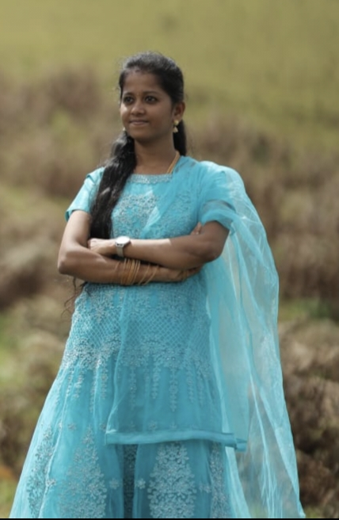

I create user-friendly designs and meaningful digital experiences. I am passionate about UI/UX Design, Web Development and Digital Marketing.
View My Work Download CV
I'm Tamilselvi G from Madurai, Tamil Nadu. I am an enthusiastic graduate interested in UI/UX Design and Digital Marketing. I have knowledge of Figma, Adobe XD, HTML, CSS, WordPress, SEO and Social Media Marketing. I enjoy creating creative website layouts, mobile application designs and digital content. I am eager to learn new technologies and improve my professional skills.
Figma, Adobe XD
HTML, CSS
SEO, Social Media Marketing
WordPress, Pantheon
Blog Writing, Website Content
Google Flow, Video Content
Designed and developed a sweets shop website using WordPress, HTML and CSS. Worked on website content and SEO optimisation.
Designed a shopping application UI using Figma. Created mobile screens and interactive prototype to demonstrate user navigation.
Created SEO-friendly blog content about Traditional Indian Sweets and Fashion Trends.
Created promotional video content for a sweets shop using Google Flow.
Madurai Sivakasi Nadar Pioneer Meenakshi Women's College
Alagappa University | Result: 7.44
Government Girls Higher Secondary School, Thiruppuvanam
Result: 71%
Government Girls Higher Secondary School, Thiruppuvanam
Result: 85.2%
Let's connect and create something amazing!
📍 Madurai, Tamil Nadu
📞 +91 6380996140
✉ tselvi2317@gmail.com